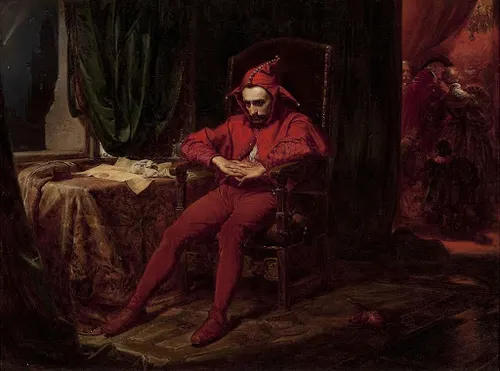

Stańczyk
Created: 1862
Painted by Polish artist Jan Matejko, Stańczyk depicts a real royal court jester known not for comedy but for his sharp political wisdom, shown here sitting alone and troubled while a ball celebrates in the background, having just learned of a devastating military loss. The painting became a powerful symbol of Polish national conscience, using a jester, traditionally a figure of foolishness, to represent the only person in the room who understands the gravity of what's happening. It remains one of the most iconic works in Polish art history.
Type: Historical Realist Painting